Actual local Better Auth/NestJS data. Original reference fixtures are shown for layout comparison only. Timestamps, real reservation states, read actions, draft values and autosave/approval notices intentionally differ. Connected text contrast has been corrected. These captures do not approve the entire inventory or clear the seven earlier differences.
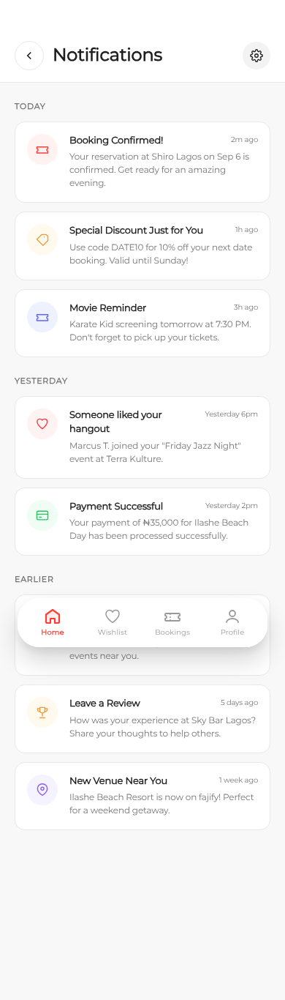
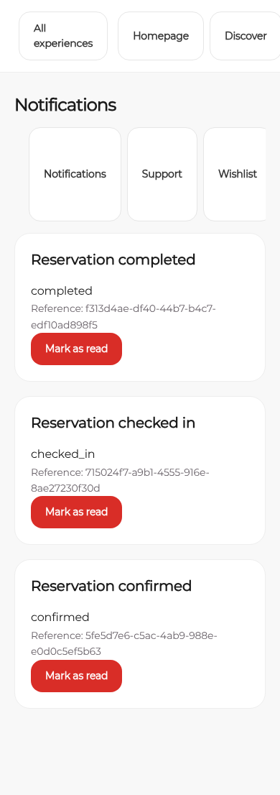
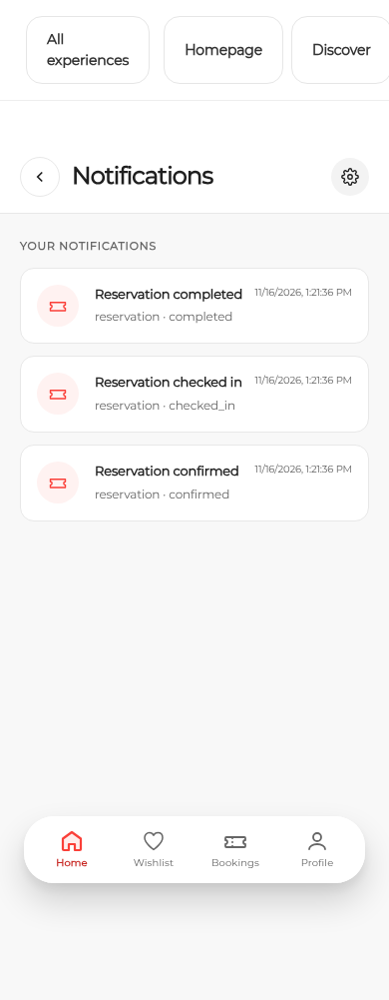
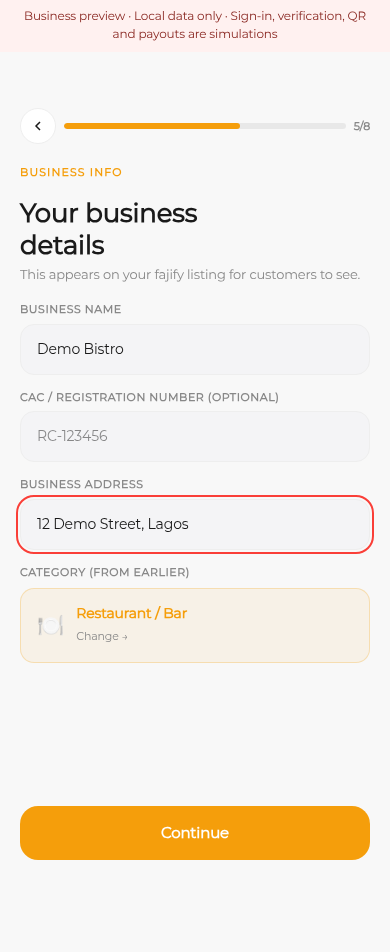
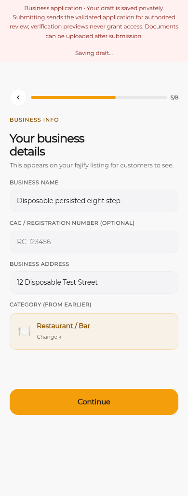
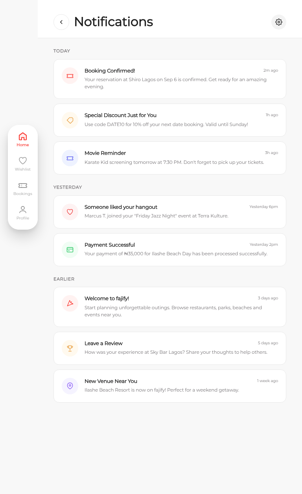
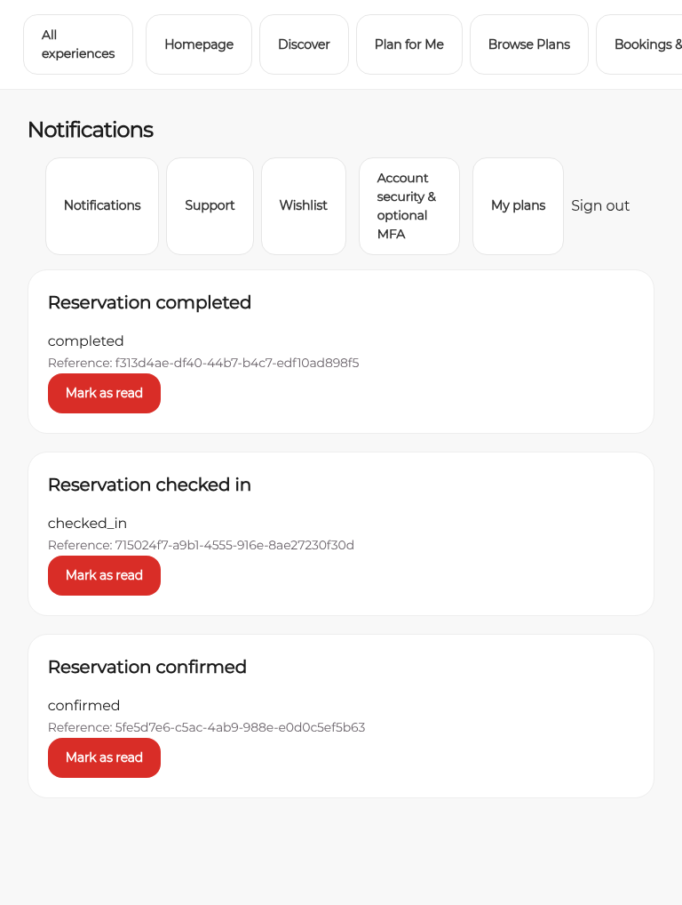
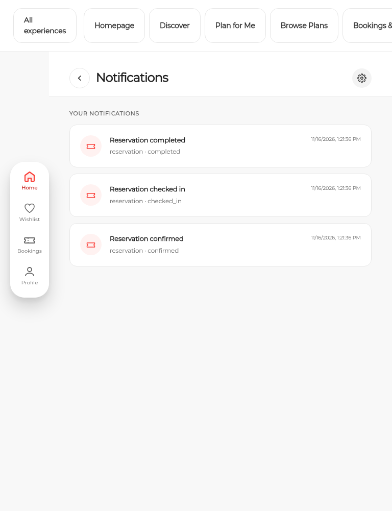
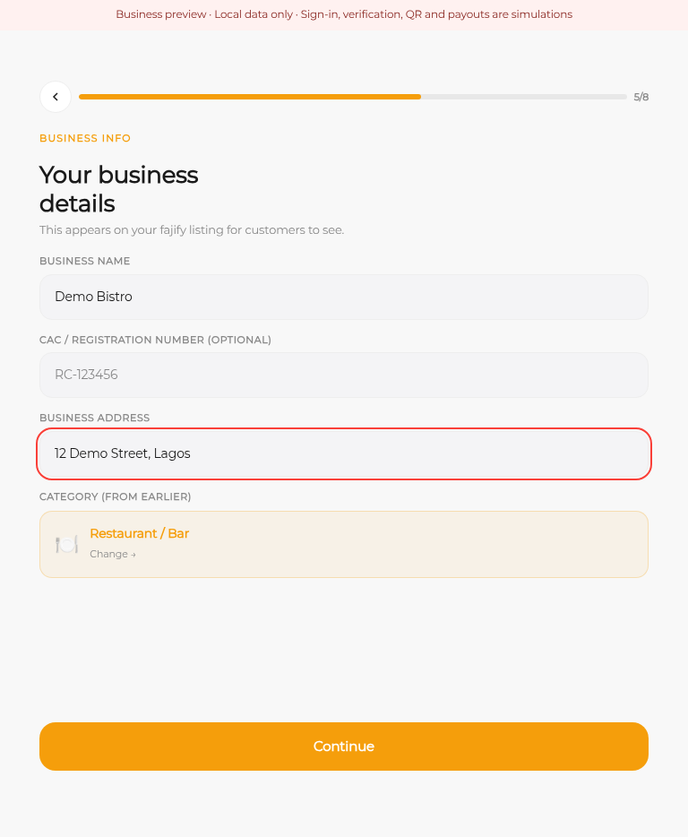
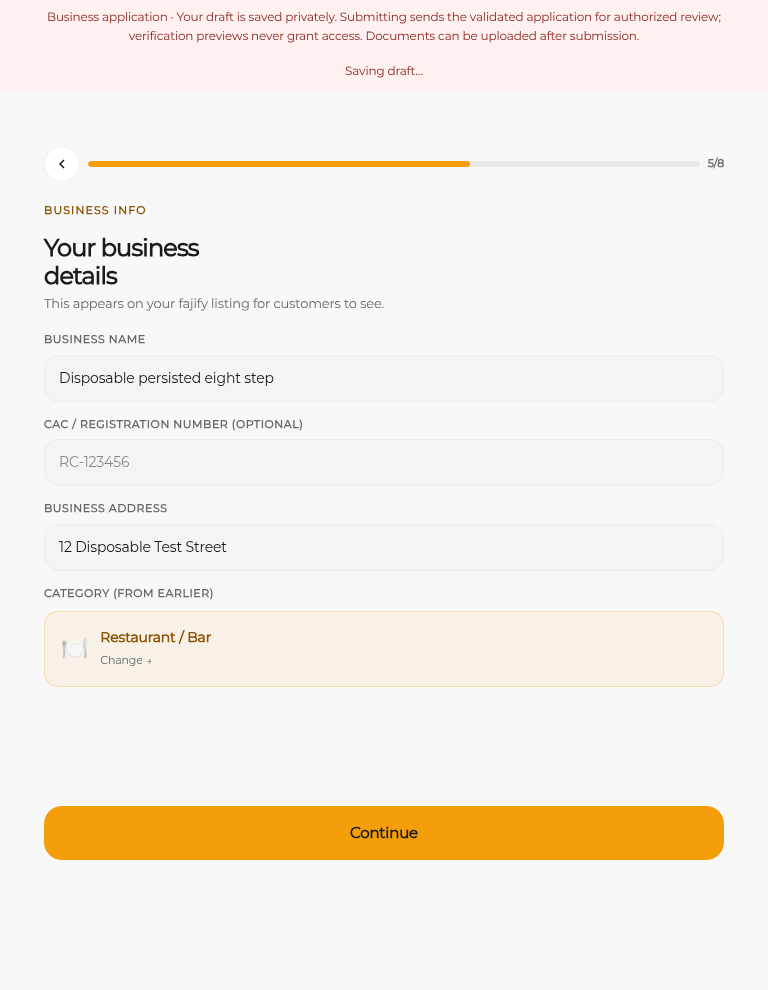
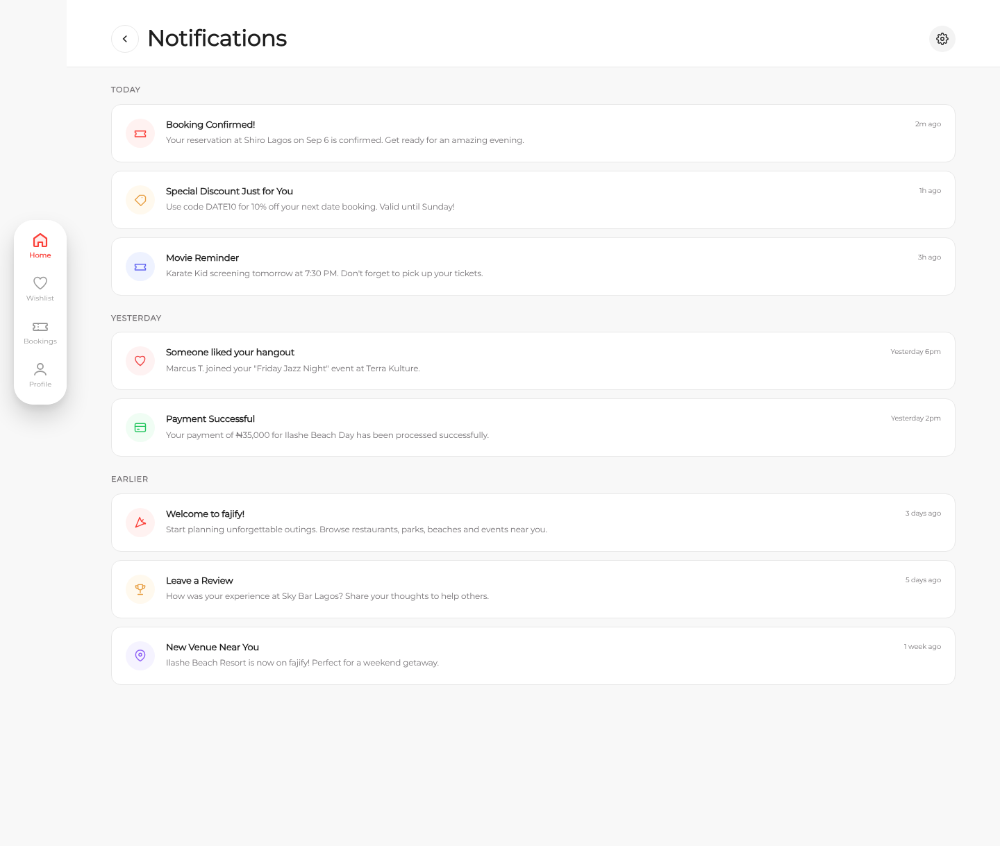
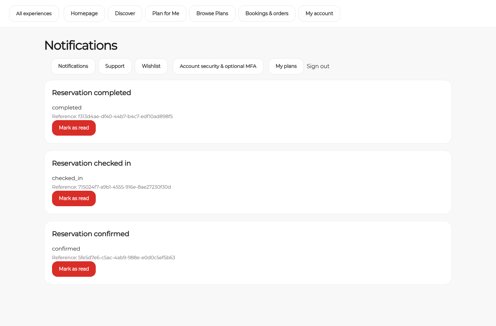
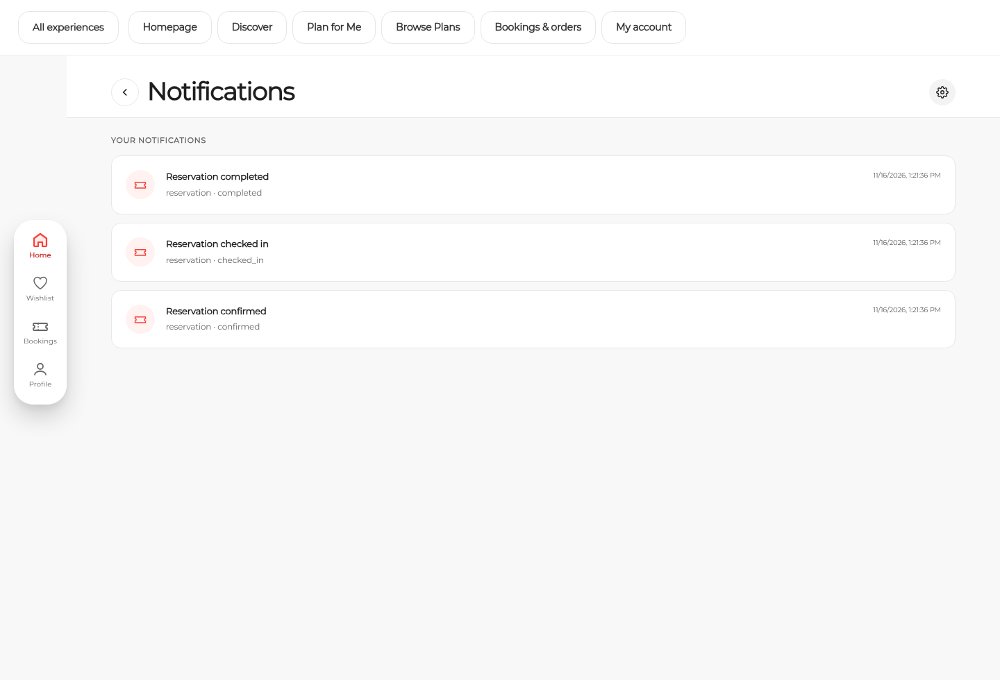
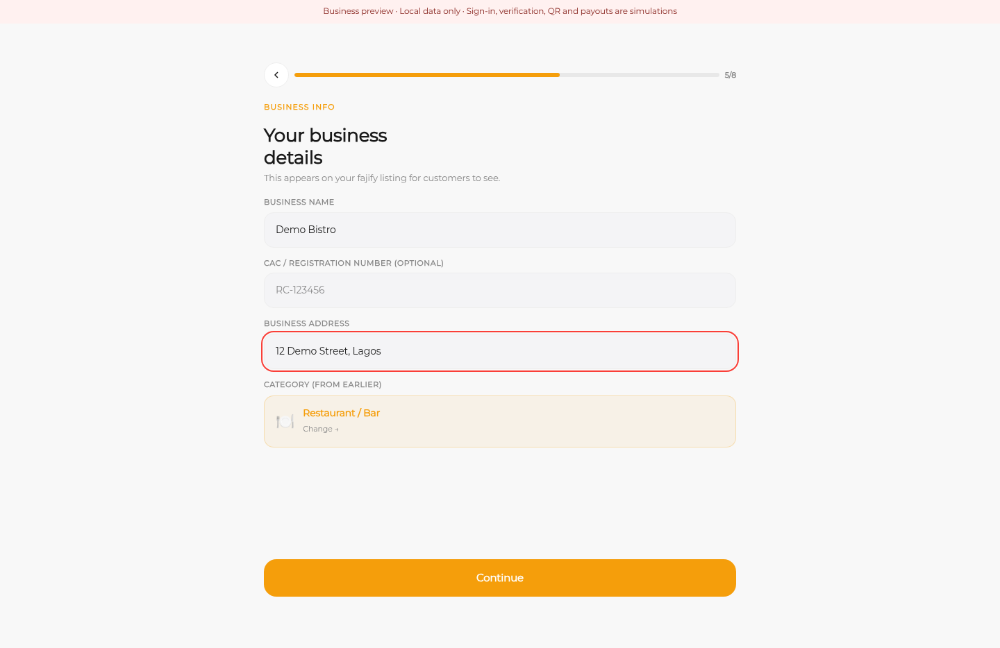
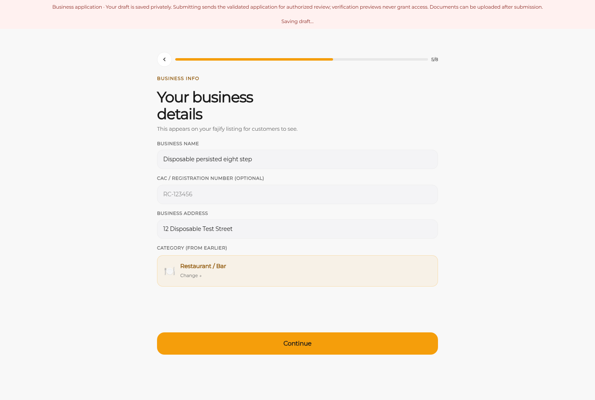